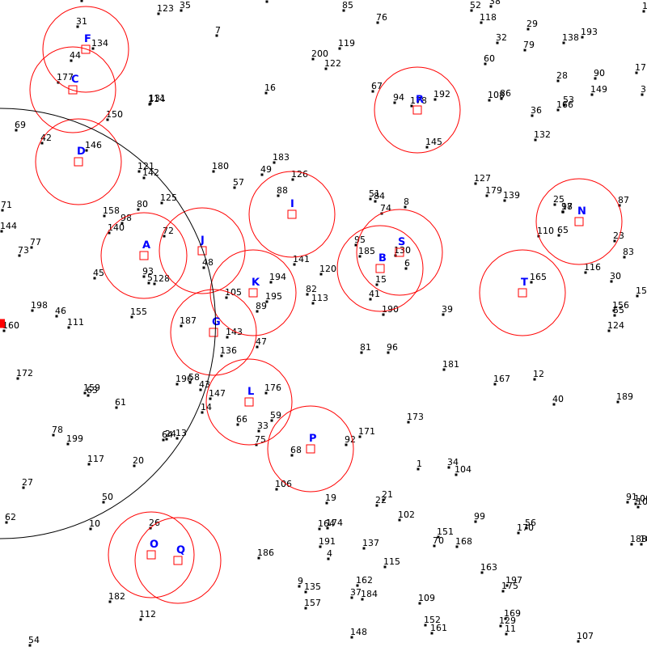
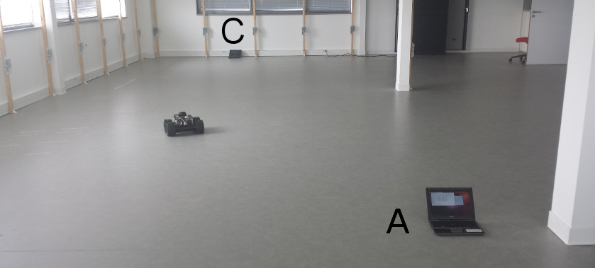
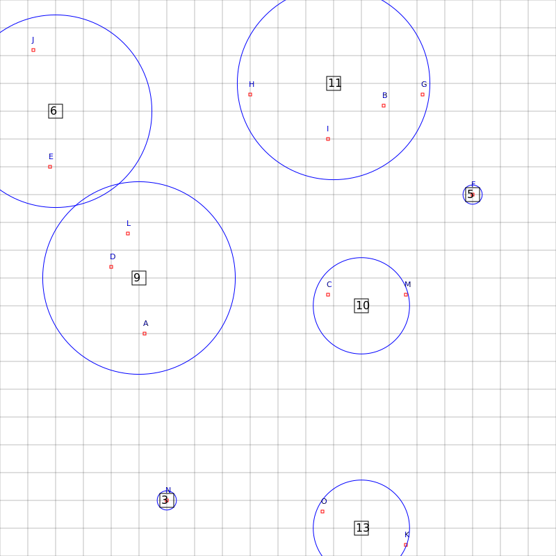
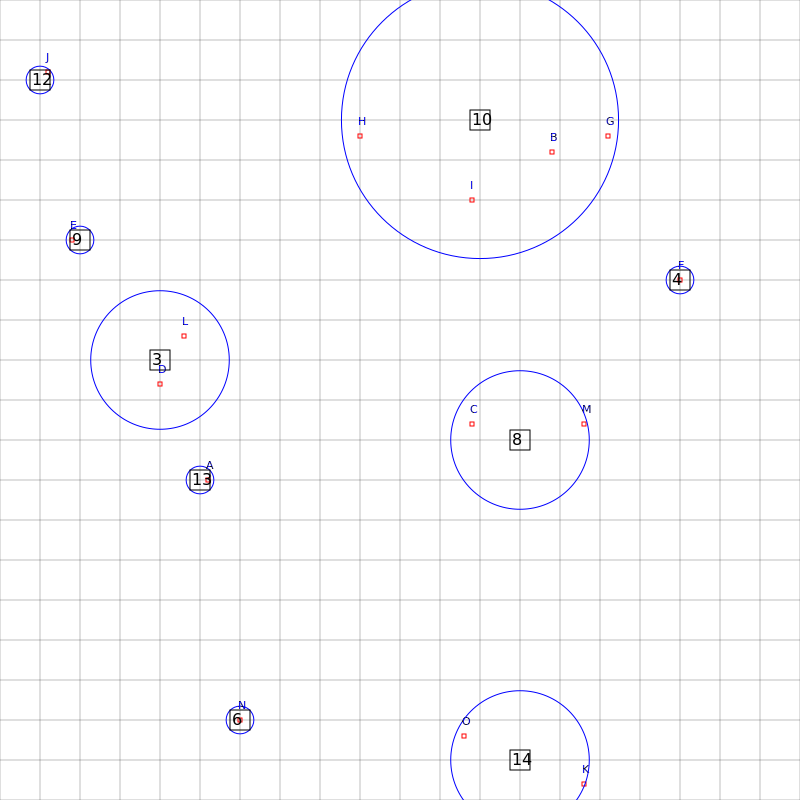

I fleet of devices with monitoring capabilities is used to cover specific points of interest. Since the devices have limited power resources, power-efficient algorithms are used to organise the nodes in groups and extend the network lifetime.

A snapshot of targets (red circles), sensors (dots) and a base station (left side)
Different groups of nodes are used to cover a set of targers.
The controlled mobility of mobile routers is exploited to help a base network in trouble to provide a better service. The base network may be any access network or metropolitan network (including wired and wireless technologies). Troubles may come from an increase of unplanned traffic, a failure of the equipment, or a power outage. Mobile routers evaluate the quality of the links using a variety of measurements and they move accordingly.

An experiment with 2 wired stations and a mobile router (right click to play).
An instance of an experiment while the destination location is not known (paper)
Drone coordination
Drones are used to monitor and follow mobile events. Since the drones consume a lot of energy a cost-efficient strategy is required. The drones communicate with each other to reduce energy consumption or to minimise the number of active drones.


Minimisation of the number of drones while covering static events.
Minimisation of the total energy cost while covering static events.
Drones are used to cover a number of mobile events. The drones are capable of alternating their altitude.